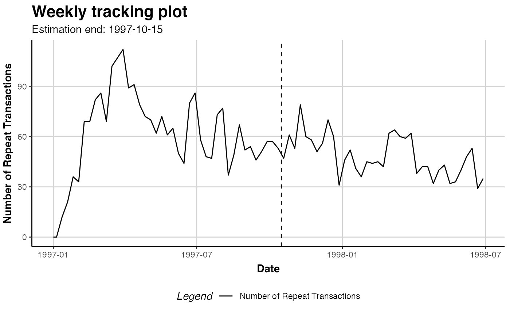

R/f_interface_clvdata.R
clvdata.RdCreates a data object that contains the prepared transaction data and that is used as input for model fitting. The transaction data may be split in an estimation and holdout sample if desired. The model then will only be fit on the estimation sample.
If covariates should be used when fitting a model, covariate data can be added to an object returned from this function.
clvdata( data.transactions, date.format, time.unit, estimation.split = NULL, name.id = "Id", name.date = "Date", name.price = "Price" )
| data.transactions | Transaction data as |
|---|---|
| date.format | Character string that indicates the format of the date variable in the data used. See details. |
| time.unit | What time unit defines a period. May be abbreviated, capitalization is ignored. See details. |
| estimation.split | Indicates the length of the estimation period. See details. |
| name.id | Column name of the customer id in |
| name.date | Column name of the transaction date in |
| name.price | Column name of price in |
An object of class clv.data.
See the class definition clv.data
for more details about the returned object.
The function summary can be used to obtain and print a summary of the data.
The generic accessor function nobs is available to read out the number of customers.
data.transactions A data.frame or data.table with customers' purchase history.
Every transaction record consists of a purchase date and a customer id.
Optionally, the price of the transaction may be included to also allow for prediction
of future customer spending.
time.unit The definition of a single period. Currently available are "hours", "days", "weeks", and "years".
May be abbreviated.
date.format A single format to use when parsing any date that is given as character input. This includes
the dates given in data.transaction, estimation.split, or as an input to any other function at
a later point, such as prediction.end in predict.
The function parse_date_time of package lubridate is used to parse inputs
and hence all formats it accepts in argument orders can be used. For example, a date of format "year-month-day"
(i.e., "2010-06-17") is indicated with "ymd". Other combinations such as "dmy", "dym",
"ymd HMS", or "HMS dmy" are possible as well.
estimation.split May be specified as either the number of periods since the first transaction or the timepoint
(either as character, Date, or POSIXct) at which the estimation period ends. The indicated timepoint itself will be part of the estimation sample.
If no value is provided or set to NULL, the whole dataset will used for fitting the model (no holdout sample).
Multiple transactions by the same customer that occur on the minimally representable temporal resolution are aggregated to a
single transaction with their spending summed. For time units days and any other coarser Date-based
time units (i.e. weeks, years), this means that transactions on the same day are combined.
When using finer time units such as hours which are based on POSIXct, transactions on the same second are aggregated.
For the definition of repeat-purchases, combined transactions are viewed as a single transaction. Hence, repeat-transactions are determined from the aggregated transactions.
SetStaticCovariates to add static covariates
SetDynamicCovariates for how to add dynamic covariates
plot to plot the repeat transactions
summary to summarize the transaction data
pnbd to fit Pareto/NBD models on a clv.data object
data("cdnow") # create clv data object with weekly periods # and no splitting clv.data.cdnow <- clvdata(data.transactions = cdnow, date.format="ymd", time.unit = "weeks") # same but split after 37 periods clv.data.cdnow <- clvdata(data.transactions = cdnow, date.format="ymd", time.unit = "w", estimation.split = 37) # same but estimation end on the 15th Oct 1997 clv.data.cdnow <- clvdata(data.transactions = cdnow, date.format="ymd", time.unit = "w", estimation.split = "1997-10-15") # \donttest{ # summary of the transaction data summary(clv.data.cdnow)#> CLV Transaction Data #> #> Time unit Weeks #> Estimation length 41.0000 Weeks #> Holdout length 36.71429 Weeks #> #> Transaction Data Summary #> Estimation Holdout Total #> Number of customers - - 2357 #> First Transaction in period 1997-01-01 1997-10-16 1997-01-01 #> Last Transaction in period 1997-10-15 1998-06-30 1998-06-30 #> Total # Transactions 4926 1770 6696 #> Mean # Transactions per cust 2.090 2.674 2.841 #> (SD) 2.275 2.892 3.772 #> Mean Spending per Transaction 35.917 37.946 36.453 #> (SD) 43.314 33.838 41.030 #> Total Spending 176928.390 67163.550 244091.940 #> Total # zero repeaters 1392 1695 1218 #> Percentage # zero repeaters 0.591 0.719 0.517 #> Mean Interpurchase time 9.738 7.996 16.017 #> (SD) 8.250 6.185 14.533 #>#># create data with the weekly periods defined to # start on Mondays if (FALSE) { # set start of week to Monday oldopts <- options("lubridate.week.start"=1) # create clv.data while Monday is the beginning of the week clv.data.cdnow <- clvdata(data.transactions = cdnow, date.format="ymd", time.unit = "weeks") # Dynamic covariates now have to be supplied for every Monday # set week start to what it was before options(oldopts) } # }